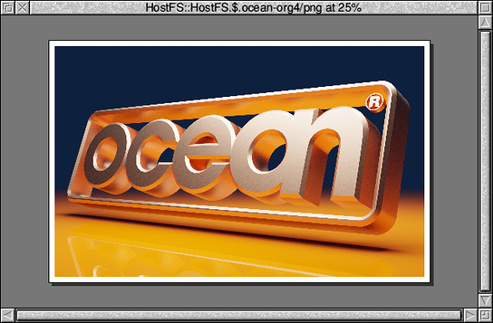
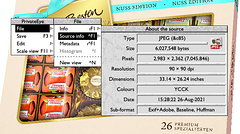
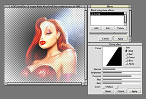
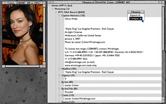
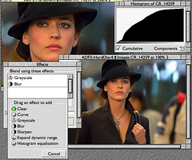
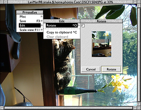

RISC OS > PrivateEye
Details
PrivateEye is an image viewer for RISC OS.
It requires RISC OS 3.6 or later and a Boot sequence with the Nested Wimp and a 32-bit Shared C Library.
Features
- Loads and displays both bitmap and vector images:
- Sprites, JPEGs, GIFs and PNGs
- DrawFiles and ArtWorks
- Bitmap effects:
- Adjust gamma, brightness and contrast
- Blur and sharpen
- Change saturation and apply histogram effects
- Alpha channel support
- Bitmap rotation with interactive preview
- Rotation is lossless for JPEGs
- Native JPEG display using SpriteExtend’s on-the-fly renderer
- Inbuilt lossless “cleaning” transparently loads progressive JPEGs
- JFIF, Exif and Adobe metadata information
- Multiple-channel histogram
- Display images may be saved:
- Convert JPEGs, GIFs and PNGs to into Sprites
- Any number of images may be open concurrently
- Customisable key map
- Interactive help (use it!)
Screenshots
 Enlarge
{kind=link}
Paper style document backgrounds. (First appeared in version 3.20)
 Enlarge
{kind=link}
Improved JPEG format information. (First appeared in version 3.10)
 Enlarge
{kind=link}
Pixeloo’s untooned Jessica Rabbit demonstrates improved transparency support. (First appeared in version 2.85)
 Enlarge
{kind=link}
Olivia Wilde demonstrates JPEG metadata display. (First appeared in version 2.75)
 Enlarge
{kind=link}
Eva Green demonstrates the effects window. (First appeared in version 2.50)
 Enlarge
{kind=link}
Tigger the cat demonstrates the interactive rotation dialogue. (First appeared in version 2.00)
Download
Current version: 3.20 (18 Nov 2022)
- Download (840K Zip)
Source Code
The PrivateEye source lives on github at https://github.com/dpt/PrivateEye.